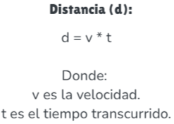
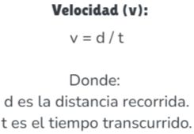
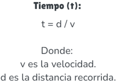
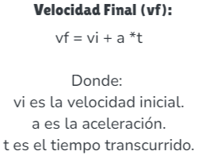
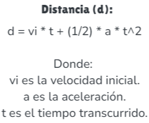
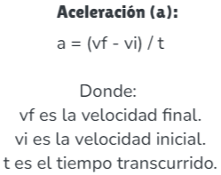

.png)
Movimiento Rectilíneo Uniforme (MRU)
El Movimiento Rectilíneo Uniforme (MRU) es un tipo de movimiento en el que un objeto se desplaza a lo largo de una línea recta con velocidad constante. Esto significa que: Velocidad Constante: La velocidad no cambia con el tiempo. El objeto recorre distancias iguales en intervalos de tiempo iguales. Sin Aceleración: No hay aceleración involucrada, ya que la velocidad se mantiene constante.
Distancia Recorrida
En MRU, la distancia recorrida es el producto de la velocidad por el tiempo
Velocidad
La velocidad en MRU es constante y se calcula dividiendo la distancia entre el tiempo.
Tiempo
El tiempo en MRU se calcula dividiendo la distancia entre la velocidad.
Movimiento Rectilíneo Uniformemente Variado (MRUV)
El Movimiento Rectilíneo Uniformemente Variado (MRUV) es un tipo de movimiento en el que un objeto se desplaza a lo largo de una línea recta y su velocidad cambia de manera uniforme, es decir, con una aceleración constante. Esto implica que la velocidad del objeto aumenta o disminuye de forma constante a lo largo del tiempo.
Velocidad Final
En MRUV, la velocidad final se calcula sumando la velocidad inicial más la aceleración por el tiempo.
Distancia Recorrida
La distancia recorrida en MRUV se calcula con la fórmula: d = v₀t + ½at²
Aceleración
La aceleración en MRUV se calcula como el cambio de velocidad dividido por el tiempo.